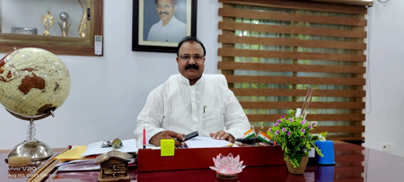

Aditya Nath, the former Chairman of Adwaita Mission group of Institutions, commanded the honour of translating the vision of Late Anand Shankar Madhavan into reality. Under his dynamic stewardship, the Vidyapith progressed leaps and bounds with the establishment and successful functioning of institutions like B.Ed. and D.El.Ed. Colleges, an I.T.I. and an Engineering College.
Late Aditya Nath was born in Kerala and settled in Bihar where he served the society by opening up new avenues for children and youth. His disciplined life and indomitable will power will ever remain an illuminating inspiration for the whole Vidyapith family.

Sri Aravindakshan Madambath
Chairman
AMHS is dedicated to the pursuit of academic excellence, encouraging students to become independent and perceptive thinkers, confident, enlightened learners and socially responsible citizens.
We are committed to inculcating in all our students strong ethical values of integrity, respect and discipline as well as clarity in thought and decision making ability.
Furthermore, it has been our founder Late Madhavanji’s and former Chairman Late Aditya Nath’s quest in life to make high quality education available and affordable to both the rural and urban as well. AMHS will be the foundation for a new generation of readers and innovators.
← Back to Dashboard